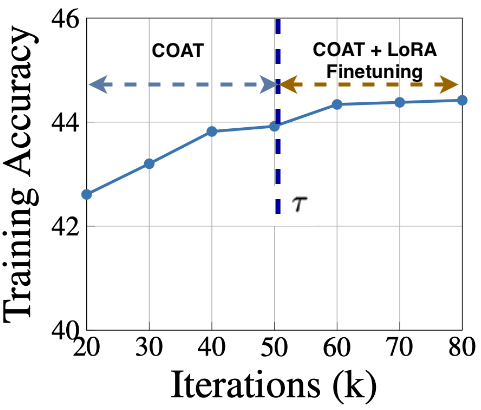
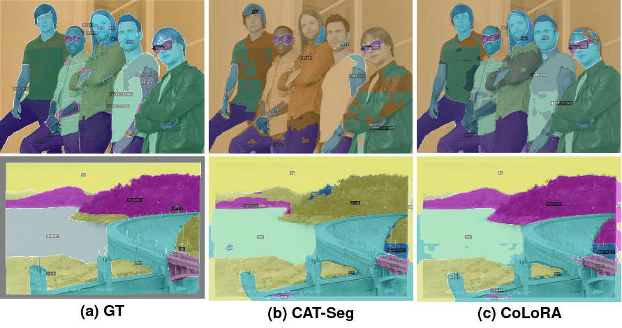

Abstract
Robust robotic perception is essential for embodied AI applications, enabling autonomous systems such as ground vehicles and drones to accurately interpret and navigate complex environments. These applications span specialized domains, including medical imaging, remote sensing, drone-based monitoring, agriculture, and engineering, as well as broader real-world scenarios such as autonomous driving and maritime operations. A major challenge in these systems is achieving semantic understanding of previously unseen categories, which is addressed by open-vocabulary semantic segmentation (OVSS). OVSS leverages large-scale vision–language models like CLIP to assign pixel-level labels based on textual descriptions. However, existing models often struggle to generalize across domains, limiting their effectiveness in real-world, multi-domain settings.
To address these limitations, we propose CoLoRA, a novel prompt learning framework that combines two key components: Cost-Aware Optimal Transport via Aggregation (COAT) and LoRA adaptation applied at model convergence. Evaluated across 19 multi-domain datasets, CoLoRA achieves state-of-the-art performance, producing a more generalizable OVSS model while adding only a marginal increase in parameters compared to the baseline. Moreover, it consistently outperforms existing methods across diverse domains.
Method
Cost-Aware Optimal Transport via Aggregation (COAT). CLIP image and text embeddings are combined via cosine similarity into a multi-modal cost volume. COAT treats label assignment as an optimal transport problem over this cost volume: a transport plan is iteratively refined with Sinkhorn updates (inner loop) to align visual embeddings with textual embeddings, then held fixed while the cost-aggregation model (spatial + class aggregation, built on Swin/linear-attention blocks) is trained with cross-entropy loss (outer loop). Unlike PLOT-style prompt learning, COAT introduces no learnable prompt tokens — it directly improves visual–textual alignment of the base CAT-Seg model.
LoRA Adaptation at Model Convergence. Once COAT training approaches convergence (iteration τ), low-rank LoRA adapters are introduced — but only on the spatial and class aggregation Transformer layers, not on the CLIP encoders. The pretrained weights stay frozen; only the low-rank update matrices are optimized. This selective, late-stage adaptation avoids the performance collapse seen when LoRA or prompt-tuning methods are applied conventionally (see ablation below), while adding only 1.014% more parameters.

Training accuracy over iterations. The model trains with COAT alone, then LoRA fine-tuning is introduced at τ = 50K (of 80K total iterations), giving a further accuracy gain.
What is the MESS Benchmark?
Most open-vocabulary segmentation models are benchmarked on everyday-scene datasets like ADE20K and Pascal VOC — useful, but a poor proxy for the domain shifts a robot actually meets in deployment. MESS (Multi-domain Evaluation of zero-Shot Semantic Segmentation, Blumenstiel et al., NeurIPS 2024) was built to close that gap: it aggregates 19 datasets across six real-world domains — General, Earth Monitoring, Medical Sciences, Engineering, Agriculture, and Biology — and reports zero-shot mIoU across all of them.
Concretely, MESS spans scenes as different as Dark Zurich (night-time driving), iSAID and ISPRS (aerial/satellite remote sensing), WorldFloods and FloodNet (disaster monitoring), Kvasir-instrument and CryoNuSeg (medical imaging), Corrosion CS, DeepCrack and PST900 (engineering inspection), CWFID (agriculture), and SUIM (underwater perception) — exactly the kind of specialized, out-of-distribution domains where a model that only "memorized" COCO-Stuff-style scenes falls apart. We train CoLoRA once on COCO-Stuff and evaluate zero-shot across all 19 MESS datasets, which is what makes the gains below a meaningful test of cross-domain generalization rather than benchmark overfitting.
Experimental Results
Multi-domain evaluation on MESS (mIoU, ViT-B/16)
CoLoRA improves +2.32 mIoU over the CAT-Seg baseline and outperforms all competing OVSS methods, including those trained with additional grounding data.
| Method | Dark Zurich | MHP v1 | FoodSeg103 | ATLANTIS | iSAID | ISPRS | WorldFloods | FloodNet | UAVid | Kvasir-inst. | CHASE DB1 | CryoNuSeg | Corrosion CS | DeepCrack | PST900 | ZeroWaste-f | SUIM | CUB-200 | CWFID | Mean |
|---|---|---|---|---|---|---|---|---|---|---|---|---|---|---|---|---|---|---|---|---|
| Random (L.B) | 1.31 | 1.27 | 0.23 | 0.56 | 0.56 | 8.02 | 18.43 | 3.39 | 5.18 | 27.99 | 27.25 | 31.25 | 9.30 | 26.52 | 4.52 | 6.49 | 5.30 | 0.06 | 13.08 | 10.27 |
| Best Sup. (U.B) | 63.90 | 50.00 | 45.10 | 42.22 | 65.30 | 87.56 | 92.71 | 82.22 | 67.80 | 93.70 | 97.05 | 73.45 | 49.92 | 85.90 | 82.30 | 52.5 | 74.00 | 84.60 | 87.23 | 70.99 |
| ZSSeg-B | 16.86 | 7.08 | 8.17 | 22.19 | 3.80 | 11.57 | 23.25 | 20.98 | 30.27 | 46.93 | 37.00 | 38.70 | 3.06 | 25.39 | 18.76 | 8.78 | 30.16 | 4.35 | 32.46 | 22.73 |
| ZegFormer-B | 4.52 | 4.33 | 10.01 | 18.98 | 2.68 | 14.04 | 25.93 | 22.74 | 20.84 | 27.39 | 12.47 | 11.94 | 4.78 | 29.77 | 19.63 | 17.52 | 28.28 | 16.80 | 32.24 | 17.57 |
| X-Decoder-T | 24.16 | 3.54 | 2.61 | 27.51 | 2.43 | 31.47 | 26.23 | 8.83 | 25.65 | 55.77 | 10.16 | 11.94 | 1.72 | 24.65 | 19.44 | 15.44 | 24.75 | 0.51 | 29.25 | 19.8 |
| SAN-B | 24.35 | 8.87 | 19.27 | 36.51 | 4.77 | 37.56 | 31.75 | 37.44 | 41.65 | 69.88 | 17.85 | 11.95 | 19.73 | 50.27 | 19.67 | 21.27 | 22.64 | 16.91 | 5.67 | 26.21 |
| OpenSeeD-T | 28.13 | 2.06 | 9.00 | 18.55 | 1.45 | 31.07 | 30.11 | 23.14 | 39.78 | 59.69 | 46.88 | 33.76 | 13.38 | 47.84 | 2.50 | 2.28 | 19.45 | 0.13 | 11.47 | 21.82 |
| Gr.-SAM-B | 20.91 | 29.38 | 10.48 | 17.33 | 12.22 | 26.68 | 33.41 | 19.19 | 38.35 | 46.82 | 23.56 | 38.06 | 20.88 | 59.02 | 21.39 | 16.74 | 14.13 | 0.43 | 38.41 | 25.65 |
| ODISE | 28.88 | 7.31 | 16.62 | 36.73 | 11.71 | 54.83 | 26.30 | 35.06 | 43.46 | 28.02 | 20.60 | 12.27 | 10.74 | 24.34 | 20.18 | 5.74 | 26.24 | 4.62 | 30.43 | 23.37 |
| CAT-Seg | 28.86 | 23.74 | 26.69 | 40.31 | 19.34 | 45.36 | 35.72 | 37.57 | 41.55 | 48.20 | 16.99 | 15.70 | 12.29 | 31.67 | 19.88 | 17.52 | 44.71 | 10.23 | 42.77 | 29.42 |
| CoLoRA (Ours) | 29.07 | 22.00 | 23.32 | 38.75 | 17.23 | 43.88 | 38.79 | 34.01 | 42.52 | 58.78 | 43.31 | 32.53 | 11.67 | 50.97 | 19.09 | 18.54 | 34.44 | 6.47 | 37.78 | 31.74 |
Comparison with prompt-learning techniques
Existing prompt-learning methods (and vanilla LoRA) consistently degrade CAT-Seg under multi-domain evaluation. CoLoRA is the only adaptation strategy that improves it.
| Base Model | Adaptation | mIoU (MESS) | Δ |
|---|---|---|---|
| CAT-Seg | — | 29.42 | — |
| CAT-Seg | VPT | 21.75 | ↓ 7.67 |
| CAT-Seg | CoOp | 23.85 | ↓ 5.57 |
| CAT-Seg | CoCoOp | 26.36 | ↓ 3.06 |
| CAT-Seg | KgCoOp | 13.57 | ↓ 15.85 |
| CAT-Seg | TCP | 10.46 | ↓ 18.96 |
| CAT-Seg | PLOT | 26.61 | ↓ 2.81 |
| CAT-Seg | CoPLOT | 26.50 | ↓ 2.92 |
| CAT-Seg | LoRA | 10.79 | ↓ 18.63 |
| CAT-Seg | CoLoRA (Ours) | 31.74 | ↑ 2.36 |
Model complexity
LoRA adapters add only 1.014% parameters, with no change in inference time.
| ZSSeg | CAT-Seg | CoLoRA | |
|---|---|---|---|
| # learnable params (M) | 102.8 | 70.30 | 70.37 |
| # total params (M) | 530.8 | 433.7 | 433.7 |
| Inference time (s) | 2.73 | 0.54 | 0.54 |
Ablation: CoLoRA components
Each component contributes; combining COAT with convergence-stage LoRA is best.
| Method | mIoU |
|---|---|
| CAT-Seg | 29.42 |
| CAT-Seg + COAT | 31.15 |
| CAT-Seg + LoRA | 10.79 |
| CAT-Seg + CoLoRA (LoRA at Convergence) | 31.74 |
When to introduce LoRA: the role of τ
Introducing LoRA earlier (35K iterations) already helps, but waiting until closer to convergence (50K) is best.
| Method | τ | mIoU (MESS) | Δ |
|---|---|---|---|
| CAT-Seg | — | 29.42 | — |
| CAT-Seg + CoLoRA | 35k | 31.10 | ↑ 1.26 |
| CAT-Seg + CoLoRA | 50k | 31.74 | ↑ 2.32 |
Qualitative Results

Qualitative comparison between CoLoRA and the baseline CAT-Seg on the MHP (top row) and ATLANTIS (bottom row) datasets from the MESS benchmark. CoLoRA produces masks that align more closely with ground truth, particularly for fine-grained and out-of-distribution categories.
Video Presentation
BibTeX
@inproceedings{sikdar2026colora,
title={CoLoRA: Optimal Transport Meets LoRA for Multi-Domain Open-Vocabulary Segmentation},
author={Sikdar, Aniruddh and Gandhamal, Aditya and Sundaram, Suresh},
booktitle={2026 IEEE/RSJ International Conference on Intelligent Robots and Systems (IROS)},
year={2026}
}Citation details will be updated upon publication.